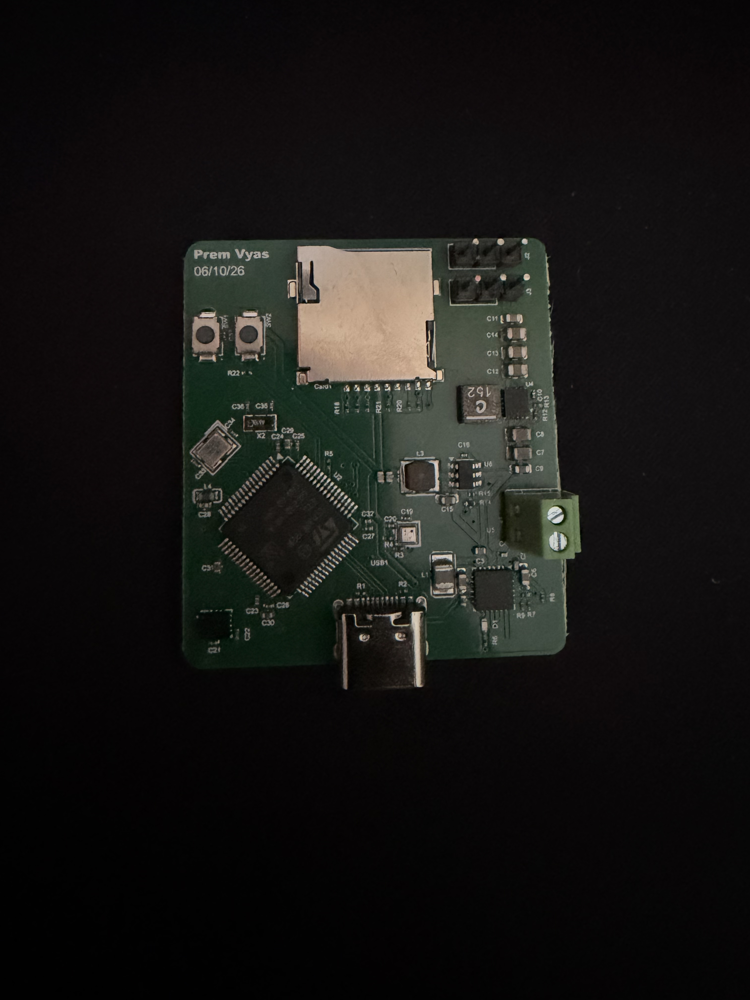
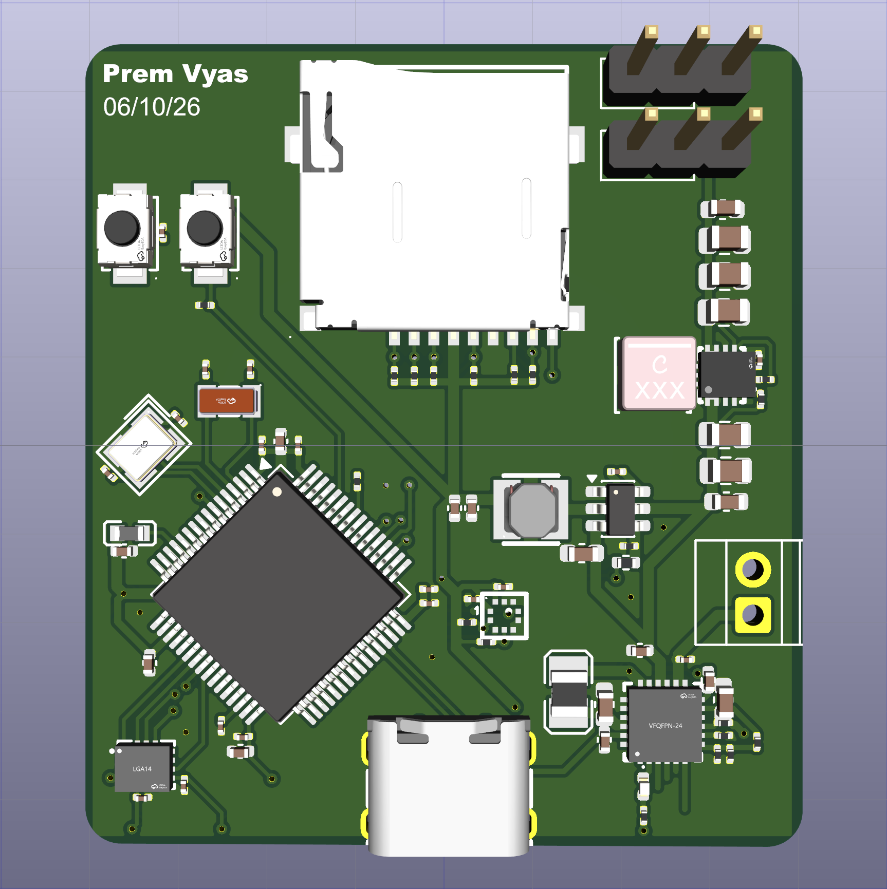
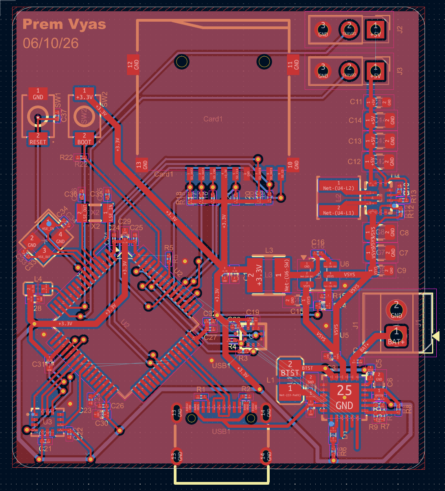
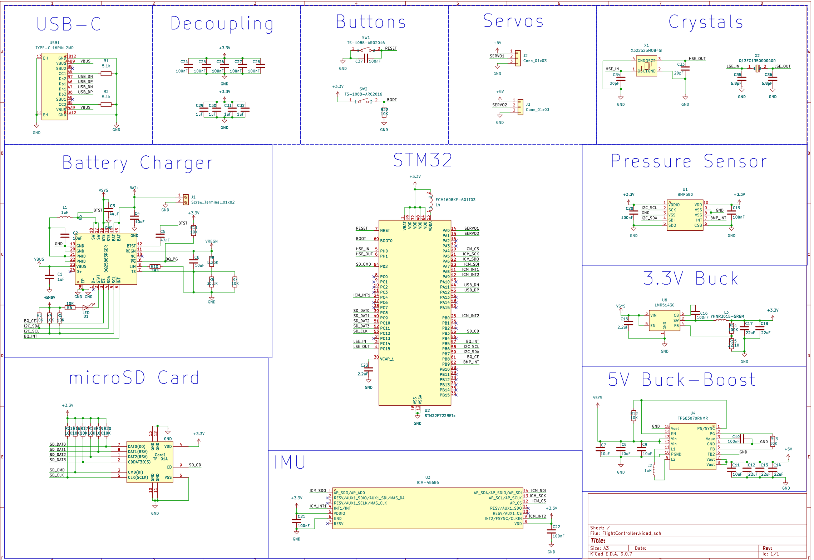

Custom Drone Flight Controller
A two layer STM32 board I designed, routed, and took all the way to fabricated hardware. 79 components in 40 × 44.8 mm, one part every 22 mm².
Why I built it
I'm on the mechanical team of my university's drone club, and I kept hitting the same wall: I could design a mount or a mechanism, but the electronics on the aircraft were a black box to me. Mechatronics is supposed to be both sides, and I only had one.
So I picked the hardest board on a drone and built one from a blank schematic. The flight controller went from the part I understood least to the part I understand best.
What I did
Put a Cortex-M7 on two layers. The STM32F722 runs at 216 MHz with a hardware FPU, which is real headroom for tight control loops, but it also brings 64 pins to escape, high speed USB, a 4-bit SDMMC bus, and two crystal oscillators. All of that, plus both sensors and the entire power system, fits in 40 × 44.8 mm on two copper layers.
Kept the sensors clean without an inner ground plane. Switching converters are noisy and an IMU is exactly the part that noise ruins. Four layers would have given me a dedicated ground plane to hide behind. On two, component placement, the ground pour, and stitching via coverage have to do that job instead.
Routed 87 nets by hand in 417 segments and 49 vias. Length matched the USB differential pair so the data lines stay in sync. Ran 0.6 mm copper on the power rails and 0.2 mm on signal. Placed every decoupling capacitor hard against the pin it protects, including the 2.2 µF on VCAP that the chip will not boot without.
Built two power rails from two sources that can't be wired together. USB-C delivers 5 V, a 2S LiPo sits between 8.4 V charged and roughly 6 V flat. A charging IC arbitrates between them, a buck makes clean 3.3 V for logic, and a buck-boost holds 5 V steady for servos and ESCs even as the pack sags below its own output voltage.
Designed it to be cheap to manufacture. Every one of the 79 components sits on the top layer, so assembly is a single pick and place pass instead of two. Held every trace and via inside the fab’s minimums and cleared DRC before release.
The hardest part wasn't the circuit
KiCad's stock libraries had no symbols or footprints for most of the parts I picked. Drawing ten footprints by hand from datasheet drawings is slow, and it's the single easiest place in the whole project to introduce an error you don't discover until the boards arrive and something doesn't fit.
So I automated it. A Python pipeline reads a list of supplier part numbers and pulls the symbol, footprint, and 3D model for each one directly into a local KiCad library. Adding a part became a one line change and a script run, and every footprint came from the manufacturer's own data instead of my reading of a dimension drawing.
That tooling is the Python in the repo. The firmware is C.
Where it is now
Boards are back from the fabrication and I'm working through bring up: rail voltages first, then USB enumeration, then each peripheral one at a time before anything gets bolted to a frame.



